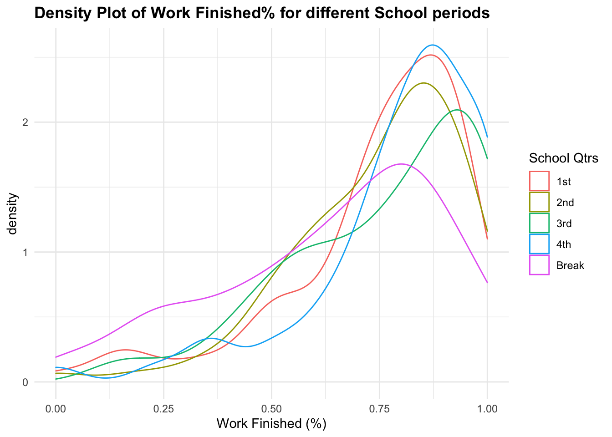

Self Evaluation Project
Andy
3/15/2022
library(tidyverse)
library(gridExtra)Read Data & Manipulation
all_dat = read.csv('/Volumes/Programming/Spring 2022/project/all_dat.csv')
# all_dat = read.csv('D:/Spring 2022/Project/all_dat.csv')
morning_rt = read.csv('/Volumes/Programming/personal/progress/morning_routine.csv')
colnames(all_dat) <- c('X', 'Name','Finished','Multiple','Phone_pickups',
'Screen_time','Created','Date','Drink','Key_words',
'Meditation','Mentality','Satisfaction',
'Reading','Productivity','Rise_time','Run','Social',
'Tech','Total','Total_todo','Work_done')
# Remove unnecessary columns & Modify some columns
all_dat <- all_dat %>%
dplyr::select(Date, everything(), Finished, Total_todo,-X,-Name,-Created, - Work_done) %>%
mutate(work_finished = round(Finished/Total_todo,4),
Drink = lag(Drink),
Tot_diff = lag(Total)-Total) %>% # Make a work_finished variable
# we lag(shift by 1) because we want the day after
tibble()
# Same for morning routine
morning_rt <- morning_rt %>%
dplyr::select(Date, everything(), -X,-level_0,-index) %>%
mutate(Date = strptime(as.character(morning_rt$Date), "%m/%d/%Y"),
Date = format(Date, "%m/%d/%Y")) %>%
tibble()
# merge morning_rt with all_dat
all_morning_rt <- merge(morning_rt, all_dat,by="Date", all.x=T) %>%
arrange(desc(Date))
# Drop Name & Created column
dat_date = filter(all_dat, Date!=0) # Exclude wrong date format
# Only include multiple-related(social, tech, satisfaction, overall, etc)
# Multiple data length: 53
multiple_dat = filter(all_dat, Productivity!=0)
all_dat## # A tibble: 460 × 20
## Date Finished Multiple Phone_pickups Screen_time Drink Key_words Meditation Mentality
## <chr> <dbl> <dbl> <dbl> <dbl> <dbl> <chr> <dbl> <dbl>
## 1 9/17/20 8 7 56 390 NA 0 0 0
## 2 9/18/20 11 3 125 211 0 0 0 0
## 3 9/22/20 13 5 57 271 0 0 7 0
## 4 9/23/20 16 4 102 223 0 0 10 0
## 5 9/24/20 11 4 80 309 0 0 6 0
## 6 9/25/20 13 5 97 252 0 0 13 0
## 7 9/26/20 11 4 51 237 0 0 8 0
## 8 9/27/20 6 4 60 338 0 0 0 0
## 9 9/28/20 9 5 82 257 0 0 10 0
## 10 9/29/20 6 5 123 326 0 0 10 0
## # … with 450 more rows, and 11 more variables: Satisfaction <dbl>, Reading <dbl>,
## # Productivity <dbl>, Rise_time <dbl>, Run <dbl>, Social <dbl>, Tech <dbl>, Total <dbl>,
## # Total_todo <dbl>, work_finished <dbl>, Tot_diff <dbl>Visualization
p1 <- ggplot(data = all_dat, alpha=.5) +
geom_density( aes(Total), color = 'red')
p2 <- ggplot(data = all_dat) +
geom_density( aes(work_finished), color = 'blue')
p3 <- ggplot(data = all_dat, alpha=.5)+
geom_density( aes(Reading), color = 'purple')
p4 <-ggplot(data = all_dat, alpha=.5)+
geom_density(aes(Meditation), color = 'black')
p5 <- ggplot(data = all_dat, alpha=.5)+
geom_density(aes(Phone_pickups), color = 'green')
p6 <- ggplot(data = all_dat, alpha=.5)+
geom_density(aes(Screen_time), color = 'orange')
p7 <- ggplot(data = all_dat, alpha=.5)+
geom_density(aes(Rise_time), color = 'skyblue')
p8 <- ggplot(data = all_dat, alpha=.5)+
geom_density(aes(Drink), color = 'darkgreen')
grid.arrange(p1, p2, p3,p4,p5,p6,p7,p8, nrow = 4)## Warning: Removed 3 rows containing non-finite values (stat_density).## Warning: Removed 1 rows containing non-finite values (stat_density).
#ggplot(data = all_morning_rt)+
#geom_bar(aes(morning_thoughts_check, fill = push_up_check))Linear Regression
##
## Call:
## lm(formula = Meditation ~ Multiple + Phone_pickups + Screen_time +
## Drink + Reading + Rise_time + Total_todo + Total + work_finished,
## data = all_dat)
##
## Residuals:
## Min 1Q Median 3Q Max
## -11.4508 -2.7803 0.3629 2.7224 14.6644
##
## Coefficients:
## Estimate Std. Error t value Pr(>|t|)
## (Intercept) -27.928856 2.194822 -12.725 < 2e-16 ***
## Multiple -1.799546 0.294213 -6.116 2.09e-09 ***
## Phone_pickups 0.057313 0.007467 7.676 1.04e-13 ***
## Screen_time 0.011173 0.002078 5.375 1.23e-07 ***
## Drink 0.363632 0.364830 0.997 0.319
## Reading -0.095219 0.015795 -6.029 3.47e-09 ***
## Rise_time 0.044732 0.003794 11.791 < 2e-16 ***
## Total_todo -0.125133 0.077555 -1.613 0.107
## Total 69.036541 3.967694 17.400 < 2e-16 ***
## work_finished -12.220280 2.156463 -5.667 2.61e-08 ***
## ---
## Signif. codes: 0 '***' 0.001 '**' 0.01 '*' 0.05 '.' 0.1 ' ' 1
##
## Residual standard error: 4.22 on 446 degrees of freedom
## (4 observations deleted due to missingness)
## Multiple R-squared: 0.6503, Adjusted R-squared: 0.6432
## F-statistic: 92.13 on 9 and 446 DF, p-value: < 2.2e-16##
## Call:
## lm(formula = Multiple ~ Phone_pickups + Screen_time + Drink +
## Meditation + Reading + Rise_time + Total_todo + work_finished +
## Total, data = multiple_dat)
##
## Residuals:
## Min 1Q Median 3Q Max
## -0.97525 -0.27817 0.01049 0.27852 0.98464
##
## Coefficients:
## Estimate Std. Error t value Pr(>|t|)
## (Intercept) 1.2658077 0.8799003 1.439 0.15615
## Phone_pickups 0.0034777 0.0026928 1.291 0.20214
## Screen_time -0.0022583 0.0008349 -2.705 0.00917 **
## Drink 0.0479972 0.1781246 0.269 0.78862
## Meditation -0.0226719 0.0180107 -1.259 0.21362
## Reading -0.0075525 0.0099885 -0.756 0.45292
## Rise_time 0.0035595 0.0017581 2.025 0.04795 *
## Total_todo -0.0292508 0.0255574 -1.145 0.25755
## work_finished 1.6374238 0.9161527 1.787 0.07961 .
## Total 2.5279760 1.8642379 1.356 0.18084
## ---
## Signif. codes: 0 '***' 0.001 '**' 0.01 '*' 0.05 '.' 0.1 ' ' 1
##
## Residual standard error: 0.4941 on 53 degrees of freedom
## Multiple R-squared: 0.7557, Adjusted R-squared: 0.7142
## F-statistic: 18.21 on 9 and 53 DF, p-value: 2.588e-13##
## Call:
## lm(formula = Multiple ~ Phone_pickups + Screen_time + Drink +
## Meditation + Reading + Rise_time + Run + Total_todo + Total,
## data = all_dat)
##
## Residuals:
## Min 1Q Median 3Q Max
## -2.46929 -0.41776 -0.02991 0.41321 1.94234
##
## Coefficients:
## Estimate Std. Error t value Pr(>|t|)
## (Intercept) -0.0848254 0.3380570 -0.251 0.801990
## Phone_pickups 0.0041219 0.0011268 3.658 0.000284 ***
## Screen_time -0.0006595 0.0003081 -2.141 0.032843 *
## Drink -0.0234166 0.0555746 -0.421 0.673699
## Meditation -0.0447821 0.0066843 -6.700 6.28e-11 ***
## Reading -0.0104282 0.0023936 -4.357 1.64e-05 ***
## Rise_time 0.0036073 0.0005040 7.157 3.38e-12 ***
## Run 0.6963294 0.2609904 2.668 0.007906 **
## Total_todo -0.0153825 0.0114401 -1.345 0.179429
## Total 6.0135421 0.4177964 14.393 < 2e-16 ***
## ---
## Signif. codes: 0 '***' 0.001 '**' 0.01 '*' 0.05 '.' 0.1 ' ' 1
##
## Residual standard error: 0.6498 on 449 degrees of freedom
## (1 observation deleted due to missingness)
## Multiple R-squared: 0.5554, Adjusted R-squared: 0.5465
## F-statistic: 62.31 on 9 and 449 DF, p-value: < 2.2e-16Linear Regression Summary for Work_done (all_dat)
#################### Linear Regression Work_done (all_dat) #####################
# Work done
work_finished_all <- lm(work_finished ~ Multiple + Phone_pickups + Screen_time +
Drink + Meditation + Reading + Rise_time + Run +
Total_todo,
data = all_dat)
summary(work_finished_all)##
## Call:
## lm(formula = work_finished ~ Multiple + Phone_pickups + Screen_time +
## Drink + Meditation + Reading + Rise_time + Run + Total_todo,
## data = all_dat)
##
## Residuals:
## Min 1Q Median 3Q Max
## -0.37080 -0.08256 0.00826 0.09489 0.39758
##
## Coefficients:
## Estimate Std. Error t value Pr(>|t|)
## (Intercept) 1.842e-01 5.753e-02 3.202 0.00146 **
## Multiple 1.032e-01 8.429e-03 12.241 < 2e-16 ***
## Phone_pickups 8.564e-05 2.348e-04 0.365 0.71547
## Screen_time -1.566e-05 6.262e-05 -0.250 0.80268
## Drink -5.041e-02 1.182e-02 -4.264 2.45e-05 ***
## Meditation 1.183e-02 1.070e-03 11.060 < 2e-16 ***
## Reading 2.372e-03 4.530e-04 5.236 2.53e-07 ***
## Rise_time -1.462e-04 7.999e-05 -1.828 0.06820 .
## Run -8.010e-02 5.640e-02 -1.420 0.15626
## Total_todo 5.904e-03 2.488e-03 2.373 0.01807 *
## ---
## Signif. codes: 0 '***' 0.001 '**' 0.01 '*' 0.05 '.' 0.1 ' ' 1
##
## Residual standard error: 0.1393 on 446 degrees of freedom
## (4 observations deleted due to missingness)
## Multiple R-squared: 0.6349, Adjusted R-squared: 0.6275
## F-statistic: 86.18 on 9 and 446 DF, p-value: < 2.2e-16Actual vs Prediction Visualization for Work_done (all_dat)
all_dat$pred_work_finished <- predict(work_finished_all, newdata = all_dat)
# Explanatory variable: work_finished
ggplot(data = all_dat, aes(x = pred_work_finished, y = work_finished)) +
geom_point(alpha = 0.5, color = "darkgray") +
geom_smooth(color = "darkblue") +
geom_line(aes(x = work_finished,
y = work_finished), # Plotting the line, y = x
color = "red", linetype = 2) +
coord_cartesian( xlim = c(0, 1),
ylim = c(0, 1) ) # Limits the range of the## `geom_smooth()` using method = 'loess' and formula 'y ~ x'
Actual vs Prediction Residual Visualization for Work_done (all_dat)
# graph for legibility# Plot of residual error as a function of prediction
ggplot(data = all_dat, aes(x = pred_work_finished,
y = pred_work_finished - work_finished)) +
geom_point(alpha = 0.2, color = "darkgray") +
geom_smooth(color = "darkblue") +
geom_line(aes(x = pred_work_finished,
y = 0), # Plotting the line, y = 0
color = "red", linetype = 2) +
ylab("residual error (prediction - actual)")## `geom_smooth()` using method = 'loess' and formula 'y ~ x'
Testing Normality
library(dplyr)
set.seed(1234)
dplyr::sample_n(all_dat, 10)## # A tibble: 10 × 21
## Date Finished Multiple Phone_pickups Screen_time Drink Key_words Meditation Mentality
## <chr> <dbl> <dbl> <dbl> <dbl> <dbl> <chr> <dbl> <dbl>
## 1 08/11/2… 5 3 144 167 0 0 0 0
## 2 10/17/2… 15 3 123 200 0 0 14 0
## 3 01/10/2… 10 3.6 98 84 0 0 15 3
## 4 1/12/21 9 3 74 304 0 0 15 0
## 5 1/31/21 4 3 61 440 0 0 0 0
## 6 12/21/2… 8 3.6 107 314 0 0 0 4
## 7 02/20/2… 15 4 97 132 0 0 15 0
## 8 01/26/2… 10 4 126 149 0 0 15 4
## 9 01/03/2… 5 2.6 80 308 0 0 10 3
## 10 12/16/2… 8 3.4 97 201 0 0 15 3
## # … with 12 more variables: Satisfaction <dbl>, Reading <dbl>, Productivity <dbl>,
## # Rise_time <dbl>, Run <dbl>, Social <dbl>, Tech <dbl>, Total <dbl>, Total_todo <dbl>,
## # work_finished <dbl>, Tot_diff <dbl>, pred_work_finished <dbl># The central limit theorem tells us that no matter what distribution things
# have, the sampling distribution tends to be normal if the sample is large
# enough (n > 30).
# The R function shapiro.test() can be used to perform the Shapiro-Wilk test
# of normality for one variable (univariate):
shapiro.test(all_dat$Total)##
## Shapiro-Wilk normality test
##
## data: all_dat$Total
## W = 0.94244, p-value = 2.305e-12Determining Distributions
- Multiple(fit.normal)
library(fitdistrplus)
library(logspline)
# The kurtosis and squared skewness of your sample is plotted as a blue point
# named "Observation".
descdist(all_dat$Multiple, discrete = FALSE)
## summary statistics
## ------
## min: 1 max: 7
## median: 3.5
## mean: 3.460435
## estimated sd: 0.9778817
## estimated skewness: -0.2439422
## estimated kurtosis: 3.080442descdist(all_dat$Screen_time, discrete = FALSE)
## summary statistics
## ------
## min: 14 max: 915
## median: 201
## mean: 233.987
## estimated sd: 126.1395
## estimated skewness: 1.589345
## estimated kurtosis: 6.826972wf <- c(na.omit(all_dat$work_finished))
descdist(wf, discrete = FALSE)
## summary statistics
## ------
## min: 0 max: 1
## median: 0.7857
## mean: 0.7267168
## estimated sd: 0.2281393
## estimated skewness: -1.071785
## estimated kurtosis: 3.677092#fit.beta <- fitdist(wf, 'beta', method = "mme")
# method = "mme": Moment matching estimation consists in equalizing theoretical
# and empirical moments.
#fit.gamma <- fitdist(all_dat$Screen_time, "gamma")
fit.normal <- fitdist(all_dat$Multiple, "norm")
#plot(fit.beta)
#plot(fit.gamma)
plot(fit.normal)